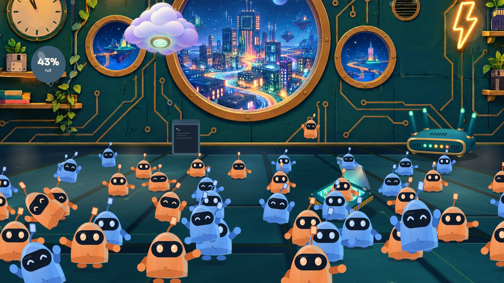
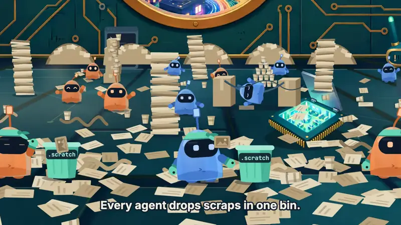
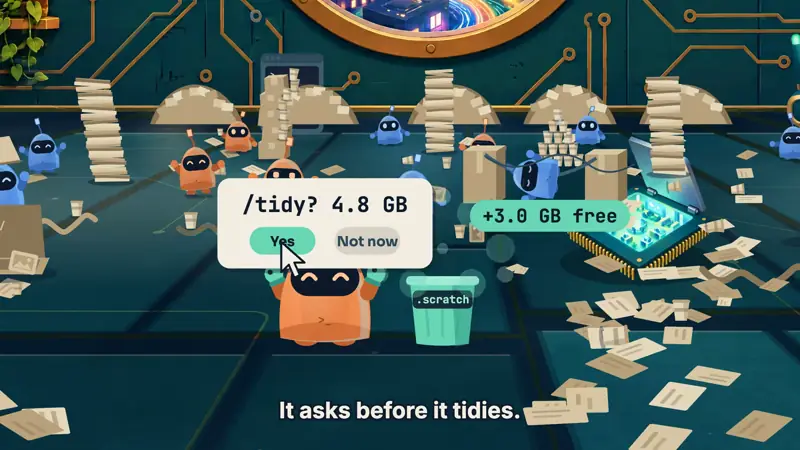
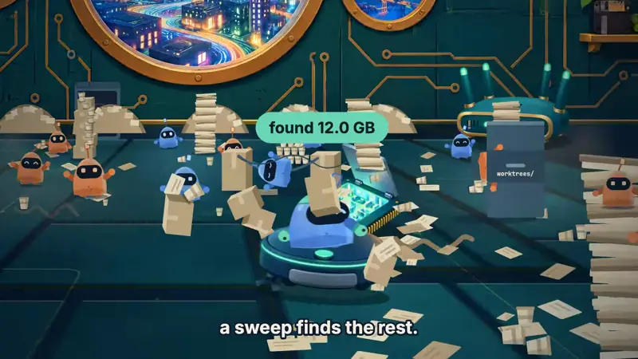
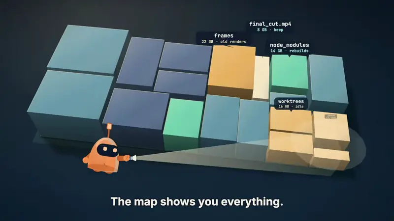

Your work is never offered
Git-tracked files, final renders and sources, your protected folders.
Free, open-source disk cleanup for Claude Code and Codex on macOS. Nothing goes without a rule or your OK.
Paste it into Claude Code. Installing never deletes your files.

How it works
Afterparty teaches the party to clean up after itself. Open a part to watch it.

Your agents put their scraps, like render frames, downloads and test output, in one .scratch folder per project, so throwaway files never mix with your work.
.scratch that have sat idle for 3 days or more.scratch~/.claude/CLAUDE.md and ~/.codex/AGENTS.md, only if you agree.my-app/.scratch/render-2/. They are cleared automatically only with autopilot on.scratch_days in ~/.config/afterparty/config.json (default 3).
When a task is done, type /tidy. It lists what the task left behind and asks before it removes anything.
afterparty tidy video-project/. Keep or drop single items with --only or --skip and the ids from the report.afterparty undo puts them back./tidy? 4.8 GB.
Once a week, Afterparty checks your project folders and sends one notification with what it found. It cleans only when you say yes.
afterparty report --notify, for example "Found 12 GB. Run /afterparty to clean."low_space_gb (default 50).afterparty autopilot on asks you to confirm, then lets the weekly job clean. Old render versions go to the Trash with undo. afterparty autopilot off goes back to reports.
Open the map to see every folder on your disk as blocks sized by the space they use, with a plain reason for what each one is.
afterparty map. The scan runs entirely on your Mac.Sizes and paths on this page are examples.
Safe by design
Git-tracked files, final renders and sources, your protected folders.
Reports by default; nothing is cleaned until you say yes or turn autopilot on.
Caches, dependency folders and your agents' .scratch scraps are cleared for good; big downloads (models, package stores) are offered one by one and download again; idle worktrees go only when every commit is on your remote; everything else goes to the Trash with undo.
Install
Install Afterparty from https://github.com/
FAQ
Scanning and cleaning are entirely local. The optional "Ask Claude about this folder" feature is off by default; when you use it, it sends that folder's paths, file names and sizes (never file contents unless you allow the agent to read files) to Claude through your own Claude Code account, and shows you exactly what will be sent first.
Caches and dependency folders that rebuild themselves, and .scratch runs your agents marked as throwaway. Idle worktrees are removed only when every commit is on your remote. Downloaded models and full package caches are offered one by one, and re-download when needed.
Without it, protected folders are skipped and reported, never guessed at.
Yes, skills and the hygiene rule install for Codex too.
Yes, for everything that went to the Trash: run afterparty undo, or name a run to undo just that one. It works for cleanups from the command line and from the map app. Things removed for good rebuild or download again instead.
afterparty uninstall.